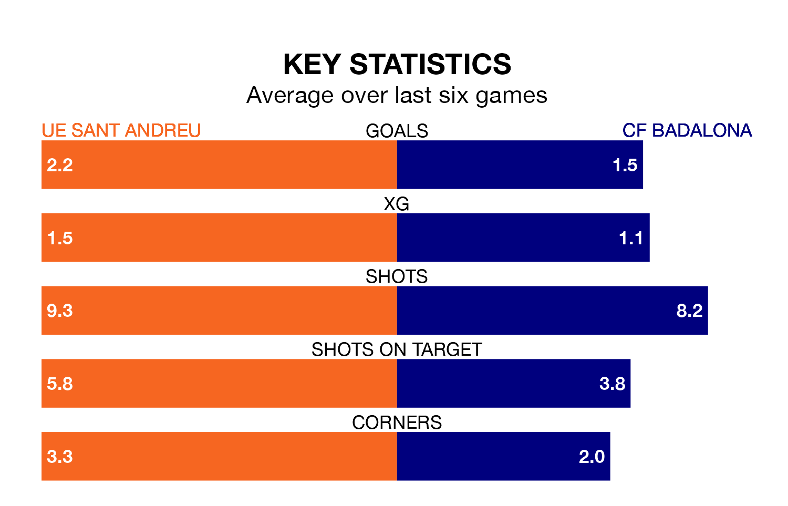

Two of the Segunda División RFEF Group 3's top sides face each other at Camp Municipal Narcís Sala in Sunday's kick-off, when fourth-placed UE Sant Andreu host table-topping CF Badalona.
UE Sant Andreu have picked up 14 wins and six draws from 27 games so far this season, and sit seven points below the visitors going into the 4pm match.
Badalona, meanwhile, have won 15 and drawn 10, picking up 55 points.
With 46 goals in 27 games so far this season, UE Sant Andreu are the league's highest scorers with 1.7 goals per game. And they are conceding fewer than average, letting in 28 goals at a rate of 1.0 per game.
Badalona are also above average scorers, with 1.3 goals per game, compared to a league average of 1.2. They have conceded 0.6 goals per game.
The hosts are in fantastic form in the Segunda División RFEF Group 3, with five wins and a draw from their last six games.
And also with five wins and a draw over that period, the away side's form is identical – they have both taken 16 points from 18.
UE Sant Andreu's last match was on March 17, a 3-1 win against Peña Deportiva, with Antonio Pelegrín García and Sergio Castillo Larraz getting the goals for UE Sant Andreu.
Badalona beat Torrent 3-1 last time out, on March 16, with Carlos Javier Polo Jiménez, José María Moreno López and Marc Vargas on the scoresheet.
Updated: 10:19 (UTC), 22/03/24